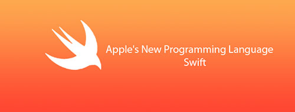

モバイル開発という大きなごちそうを味わいたい？ 一番ホットでクールな技術を体験したい？君、なかなか目があるね
疑いなく、モバイル開発は現在そして今後数年にわたって大いに盛り上がるでしょう。無数の開発者ポジションが空いています。各企業はさまざまなレベルのプログラマー——初心者レベル、入門レベル、中級、熟練者、エキスパート——を求めています。この記事は初心者向けに書いています——あなたたちが最初のiOS開発の仕事を見つける手助けをします。
「どうしてあなたの言うことを聞く必要があるの？」
あなたはそう言うかもしれません。もっともな疑問です——もし初心者がでたらめなアドバイスをするなら、聞かないのが一番です。
私もすごい達人というわけではありません。ましてや特別に経験豊富なiOS開発者でもありません——しかし、私は市場を十分に理解しているので、あなたの役に立てることはあるでしょう。
最初は、収入は多くないけれど（それでも食べていくのに十分で、開発に専念できる）アプリをいくつか持つ独立開発者でした。その後、ジュニアiOS開発者として会社に加わり、ようやく明日の食べ物を心配せずにアプリ開発に専念できるようになりました。望めば、会社に勤めて生活に困らない選択もできました（でもそれは私には合わないかもしれません——私の血には起業家の血が流れています）。
さて、多くを語らずにやりましょう——どうすればiOS開発者になれるのでしょうか？
1. Macを買う（iPhoneを持っていないなら、腎臓を売る必要もある）。

iOS開発にはMacが必要です。
まあ、実は次善の策もあります（例：Hackintosh や Mac In Cloud）。でも、私の忠告を聞いてください——iOS開発者にとって、Macはあなたの主要な武器になります。一般的には、最新・最速・最高価格のデバイスに大金を費やす必要はありません。しかし、せめて「Mac」というものが必要です。もちろん、あなたがちょっとしたお金持ちで、少し良い入門デバイスを買いたいのなら、Mac Miniを検討してみてください——それはおそらく最もコストパフォーマンスが高いモデルです。私のように携帯性を重視するなら、Air——特に大画面版を選びましょう。新品でなければならないわけではありません。eBayで中古品を手に入れるのも素晴らしいです。
2. Xcodeをインストールする。
さて、ピカピカの新品（良い中古品も新品同様です）のMacを手に入れたら、次のステップは[Xcode]をインストールすることです。XcodeはiOS開発者にとって最も重要なソフトウェアです。XcodeはiOSアプリを開発するためのIDE（統合開発環境）です。無料なので、あなたはMac App Storeから直接ダウンロードできます。今すぐダウンロードしましょう。ぐずぐずしないで！
Xcodeでは、コードを書き、編集し、ストーリーボードでアプリを「描き」、ユニットテストなどを行います。また、Xcodeを使ってApp Storeにアプリをアップロードする必要もあります。XcodeはすべてのiOS開発者にとって最も重要なソフトウェアなので、できる限り使い慣れる必要があります。
3. プログラミングの基礎を学ぶ（おそらく最も難しい点）。

ここがおそらく最も難しいステップです——あなたはすぐにプログラミングを始める必要があります。ある程度のプログラミング経験があれば、Objective-C（やや難しい）とSwift（やや簡単）のどちらかを選べばいいでしょう。それほど悩む必要はありません——どちらも基本的には標準的なオブジェクト指向プログラミング言語です。しかし、コードを一行も書いたことがないなら、慌てる必要はありません——ここに完全な初心者のためのお得なリソースが2つあります：
Ry's Objective-C tutorial?——「昔ながら」のObjective-Cファンに適しています。Objective-Cを深く学ぶ必要はありません（Swiftこそが未来の主流です<あるいはすでに現在の主流ですが>）。しかし、基本を理解し、それで書かれたコードを読めるようにしておくのが良いでしょう。
Swift language guide——Apple公式提供——これは最高のSwiftリファレンス兼学習資料です。Appleが出したものは間違いありません。
もちろん、すべてを深く理解する必要はありません——もっと経験を積んでから、それらに取り組めばいいのです。しかし、変数、ポインタ、クラス、データ型、ループといった概念はしっかり理解する必要があります。そうすれば、今後の学習が自然とうまく進みます。
4. チュートリアルに従って、見よう見まねで作る
このステップから、いよいよ役に立つものを作り始めます。これらのウェブサイトを見てみましょう：
AppCoda——初心者にとってはおそらく最高の出発点です。非常に詳しい説明付きのさまざまなチュートリアルがたくさんあります。必ずすべてやり遂げてください！
Ray Wenderlich——もう一つの役立つウェブサイトで、膨大なiOS開発チュートリアルのデータベースを備えています。一つずつ順番に学んでいきましょう。
しかし、これらのサイトやチュートリアルだけに留まらないでください！先に進んで、電卓アプリを作りましょう。次に天気アプリ。そして為替換算アプリ。音楽アプリ。わかりましたか？関連するチュートリアルを見つけられる限り、それらを全部作りましょう。
Xcodeとプログラミング言語（選んだObjective-CまたはSwift）を十分に使いこなせるようになったと感じるまで、チュートリアルに従ってアプリを作り続けてください。その時点で、さらに進みましょう——
5. 自分のアプリの開発に取りかかる

OK、だんだん調子が出てきました。さて、あなたは自分のアプリの開発を始めます。それは将来の面接で役立つ強力な武器になるでしょう。
怖がらないで！Facebookを作れと言っているわけではありません。私たちは初級職から始めるべきですよね？初級職では、同僚から多くのことを学べます。背伸びしても意味がありません。いきなり5年の経験を持つエキスパートになれるわけがないのです。
ですから、心を落ち着けて、今の自分がどのiOS開発分野が最も得意かを考えてみてください。
もしかすると、ネットワーク関連のアプリを開発したことがあるかもしれません。あるいは、UIKitを研究して、複雑なユーザーインターフェースを作るのが得意かもしれません。もしくは、音楽プレイヤーアプリを開発して、iOSのオーディオが好きかもしれません。自分の興味と知識を活用して、それをアプリ開発の基盤にしましょう。清潔で、スタイルがあり、、うまく動作するコードを書きましょう。
6. その間に、ソフトウェア開発に関する幅広い知識をできるだけ多く学ぶようにしましょう。

あなたがこの記事を読んでいるということは、近いうちに大学でコンピュータを学ぶつもりはないということでしょう。良い知らせです！その必要はまったくありません！
自宅のパソコンで、コンピュータサイエンス、プログラミング、ソフトウェア工学などに関する多くのコースを学べます。
もちろん、学位には及びませんが、iOS開発に限って言えば十分です。上の画像が見えますか？そこに書いてある文字を読んでください。リンクをただで提供したりはしません——情報検索は開発者にとって最も重要なスキルの一つです。トレーニングを始めましょう。Googleはあなたの良き師であり友です。
7. アプリを完成させる。
あなたは学習とアプリ開発に専念し、数日、数週間、数か月が過ぎました……ねえ、そろそろ自分で納得できるアプリがひとつできているはずです。アプリこそがあなたの履歴書です——全力を尽くさなければなりません。いや、身を粉にして尽くすくらいの覚悟で。企業はあなたのアプリに何を期待するのでしょうか？ここにいくつかの提案があります：
きちんと動作するアプリ
きれいなコード
コード構造——小さなクラス、適切な変数名、Xcode内の適切なファイル整理など
ストーリーボードの使用（ストーリーボードと手書きコードの両方でUIを作れるなら、それは最高にクールです）
CocoaPodsの使用
いくつかの簡単なユニットテスト
サードパーティライブラリの使用（例：GitHub上のオープンソースプロジェクト——実際の仕事で非常に役立つため、大きな加点ポイントになります）
もちろん、すべてはあなたがどんな仕事とどんな会社を探しているかによりますが、全体的に言えば、上記のことをしっかり学べば、どこへ行っても怖いものなし。
OK、これであなたは自慢できるすごいアプリを手に入れました。次のステップ——
8. App Storeでアプリを公開する

ええと、はっきり言っておきます——このステップは必須ではありません。なぜなら開発者アカウントが必要で、そのアカウントには年間99ドルの費用がかかり、経済的に苦しくなる可能性が十分にあるからです。
公開するかしないか、それが問題です……それはあなた次第です。ただし、うまく公開できれば、多くの企業はそれを大きな加点ポイントと見なすでしょう。
App Storeに自分のアプリがあるということは、アプリ公開のプロセスに精通していることを意味し、また、Appleのアプリに対する制限（かなり多いです）に精通し、アプリ自体以外の公開に必要な事項（アプリの説明、キーワード、スクリーンショット、プロモーションビデオなど）にも精通していることを示します。
このステップをスキップしても構いませんが、ぜひ試してみることを強くお勧めします（私の最初の仕事は、App Storeに出していたアプリのおかげで見つかったのだと思います）。
9. アプリをGitHubにアップロードする。

GitHubGitHubは、ソースコード共有を主な機能とするソーシャルプラットフォームです（それに似ていてGitHubほど人気がないもう一つのプラットフォームもあります）。Bitbucket）。
ここでソースコードをアップロードでき（公開または非公開に設定可能）、他の人のコードを閲覧でき、オープンソースプロジェクトに貢献することもできます。GitHubは広く使われており、これまでずっと独立開発者だとしても、そこから多くの利益を得られます——コードをより良く整理でき、おそらく最高のバックアップを得ることができます。
しかし、なぜアプリをアップロードするのでしょうか？理由は簡単です、面接官にソースコードを見せるためです。
もうメールでコードを送るのはやめなさい。目を覚まして、90年代じゃないんだから。
10. 気に入った会社に連絡しよう！

夢をかなえる時が来ました——今、あなたは最初のiOS開発の仕事を受け入れる準備ができました！インターンや初級のポジションから始まるかもしれませんが、それは重要ではありません——重要なのは、あなたが今、最初の仕事を見つける能力を持っているということです、何事も始めが難しいですから、後はうまくいきますよ。
ですから、履歴書を準備して、あなたが憧れる会社を見つけて、一緒にアプリを開発しましょう！
出典：http://www.cocoachina.com/ios/20150617/12165.html